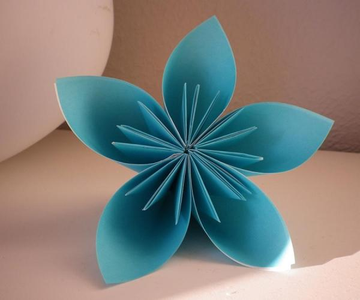
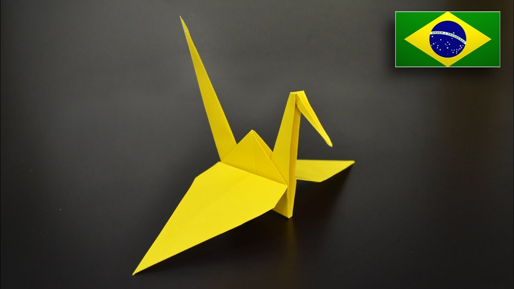
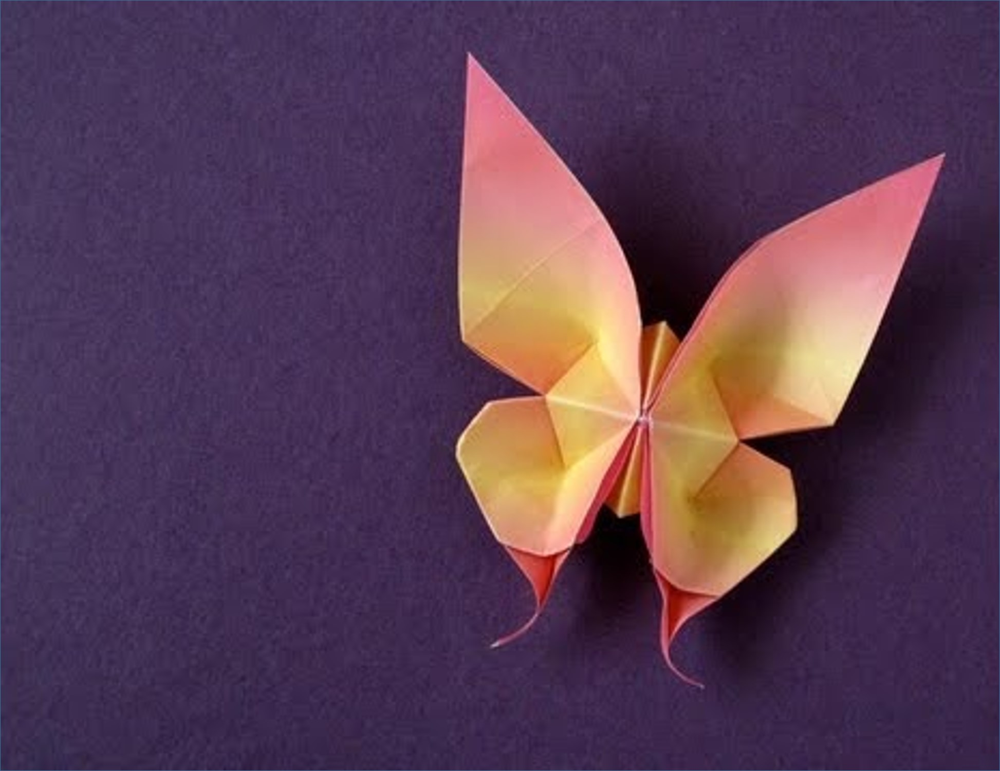

Origami Designs
 About Us
Follow Us
About Us
Follow Us
Origami De Flor
Um origami de FLor
Fatos sobre o origami de Flor
- Essa flor carrega como simbologia a sabedoria e, na cultura japonesa, é um belo
presente de aniversário. Dessa forma, a dobradura de iris traz também todo esse
significado e presentar alguém com ela significa votos de saúde e sabedoria.
Origami de Passaro
Um origami de Passaro
Fatos sobre o Origami tsuru
- O tsuru é um símbolo de paz no Japão, e também de longevidade e sorte, e costuma ser
usado para presentear pessoas doentes e hospitalizadas com mil tsurus de origami,
para demonstrar o desejo de sua recuperação plena.
- vale lembrar a história de Sadako Sassaki, uma garota de 12 anos que sofria de
leucemia em consequência das bombas atômicas que assolaram o Japão na Segunda Guerra.
Na tentativa de se curar, Sadako queria dobrar os mil tsurus, mas faleceu antes de
realizar seu desejo. Sua história se espalhou e em sua homenagem foi construída,
dentro do Memorial da Paz de Hiroshima, uma estátua em que ela segura um tsuru gigante.
Origami de Borboleta
Um origami de Borboleta
Fatos sobre o origami de Borboleta
- As borboletas representam a união, auto-transformação, clareza mental, novas etapas,
liberdade, renascimento.
- Tambem representa os ciclos da vida, movimento e mudança.